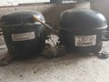

Por qué es importate reciclar y reparar?.
Reciclar y reparar para un futuro mejor.
Reciclar y reparar son prácticas fundamentales para reducir el impacto ambiental y promover la sostenibilidad. A continuación te puedo presentar algunos beneficios del reciclaje. Conservación de recursos naturales; el reciclaje ayuda a conservar los recursos naturales, como el agua, la energía y los minerales. Reducción de residuos; el reciclaje reduce la cantidad de residuos que se envían a los vertederos y minimiza la contaminación del suelo y del agua. Ahorro de energía; el reciclaje puede ahorrar energía, ya que se requiere menos energía para producir productos a partir de materiales reciclados.
Beneficios de la reparación.
Reducción de residuos; la reparación de productos puede reducir la cantidad de residuos que se generan, ya que se prolonga la vida útil de los productos. Ahorro de dinero; la reparación de productos puede ahorrar dinero, ya que no es necesario comprar productos nuevos. Promoción de la sostenibilidad; la reparación de productos promueve la sostenibilidad, ya que se reduce la demanda de recursos naturales y se minimiza la generación de residuos.
Reciclar y reparar son prácticas importantes que pueden ayudar a reducir el impacto ambiental y promover la sostenibilidad. Al reciclar y reparar podemos conservar los recursos naturales, reducir la cantidad de residuos y ahorrar energía.
